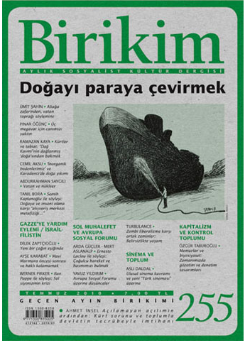
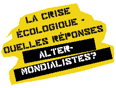

Turkish Translation of ‘Life in Limbo?’ Published
The Turkish journal, Birikim, have published a translation of our Issue 5 editorial article, Life in Limbo? The piece is published in Birikim No. 255, the full contents of which can be found online here.
{kind=link}
UPDATE (25/10/10): The translation is now available online here.
Event in Berlin with Turbulence editor, Rodrigo Nunes: ‘Brasilien nach Lula – Rückwärts? Vorwärts? Oder alles wie gehabt?’
[Deutsch siehe unten]
Brazil after Lula: backward, forward, more of the same?
Weds. 29th September 2010, 7pm
This event will discuss likely scenarios for Brazil after the Presidential elections, scheduled to take place on Sunday 3 October, 2010.
President Lula, elected in 2002 and again in 2006, was one of the first in a series of ‘Pink Tide’ presidents in Latin America – widely regarded (if not without it’s critics) as breaking the neoliberal mould and offering leftwing alternatives on the level of political representation. The 2010 elections will be both the first after he has reached his constitutional limit of two consecutive terms as well as the first time he has not run for president since 1989. As such, they have already been widely dubbed by politicians and commentators as marking the beginning of a ‘post-Lula’ era: in other words, the start of a period which at once builds upon and is heavily determined by the dynamics and structures resulting from the transformations that took place in his eight-year tenure.
Five areas will be key to the analysis developed here: (1) macroeconomic, (2) social and (3) international policies; (4) the Worker’s Party (PT) internal politics; and (5) present and emerging social movement dynamics. Throughout, the main questions to be asked will be: even if Lula’s PT stays in power, should one expect the deepening of a transformative process or its stabilisation? Is it possible to predict the unfolding of a post-neoliberal transition in the present scenario? What would need to be the case for that to happen, and which social forces could set such a process in motion?
The event will take place in English with German translation.
Rodrigo Nunes is a Brazilian philosopher, with a PhD from Goldsmiths College, University of London, and presently a research fellow at PUCRS, Porto Alegre, Brazil. Over the years, he has been actively involved in different political projects, from community and labour organising to the organisation of the first editions of the World Social Forum. His texts have appeared in publications such as Radical Philosophy, Transform, ephemera, and Mute. He is the curator of “Stronger are the powers of the people”: Politics, poetics and popular education in Brazilian cinema, 1962-1979, and a member of the editorial collective of Turbulence (www.turbulence.org.uk).
This event is organised by the Heinrich Böll Foundation’s Educational Institute in Berlin. It is made possible through the funding of the Stiftung Deutsche Klassenlotterie Berlin.
The event is free. Registration is requested, but is not compulsory. Please email: global@bildungswerk-boell.de
The event will be chaired by Turbulence editor, Ben Trott.
Location: Bildungswerk Berlin der Heinrich-Böll-Stiftung, Kottbusser Damm 72, 10967 Berlin (U-Bahnhof Hermannplatz)
More info: http://www.bildungswerk-boell.de/calendar/VA-viewevt.aspx?evtid=8394&returnurl=/index.html
===DEUTSCH===
Brasilien nach Lula: Rückwärts? Vorwärts? Oder alles wie gehabt?
Mi, 29.9.10, 19.00
Rodrigo Nunes wird im Rahmen einer Podiumsdiskussion mögliche Entwicklungsszenarien in Brasilien nach den anstehenden Präsidentschaftswahlen am 3.10.2010 diskutieren.
Brasiliens Präsident Lula – gewählt 2002 und wiedergewählt im Jahr 2006 – war einer der ersten Präsidenten, der im Zuge der lateinamerikanischen so genannten pink tide (linke Strömung) an die Macht kam. Auch wenn der Prozess einer stärkeren Linksorientierung in Lateinamerika in Teilen mit Kritik bedacht wird, hält man ihm weithin zugute, dass dadurch der eiserne Griff des Neoliberalismus auf dem Kontinent aufgebrochen und linke Alternativen auf politischer Repräsentationsebene angeboten wurden. Die diesjährigen Wahlen markieren das Ende Lulas verfassungsmäßiger Amtszeit. Zudem sind sie die ersten Wahlen seit 1989, in denen Lula nicht als Kandidat antritt. Viele PolitikerInnen und KommentatorInnen beschreiben diese Wahlen aus diesem Grund als den Anfang einer ‚Post-Lula-Ära’: in anderen Worten als eine neue Ära, die jedoch stark von den während seiner Amtszeit entstandenen Dynamiken und Strukturen geprägt sein wird.
Der Vortrag konzentriert sich dabei auf fünf Themenfelder: (1) Makroökonomie, (2) Sozial- und (3) Außenpolitik; (4) interne politische Strukturen und Kämpfe der ArbeiterInnenpartei PT; sowie (5) die gegenwärtigen und entstehenden Dynamiken innerhalb sozialer Bewegungen. Die Diskussion nimmt dabei folgende Fragen in den Fokus: Ist zu erwarten, dass – auch wenn Lulas PT an der Macht bleibt – die Transformation verfestigt oder gar vertieft wird? Sind gar die Umrisse eines Übergangs in eine post-neoliberale Ära auszumachen? Wie müsste die politische und soziale Situation beschaffen sein, um dies zu ermöglichen, und welche sozialen Kräfte könnten einen derartigen Prozess anstoßen?
Im Englisch mit deutscher Übersetzung.
Rodrigo Nunes ist ein brasilianischer Philosoph, der seinen PhD am Goldsmiths College, University of London erlangte, und momentan Forschungsstipendiat an der PUCRS, Porto Alegre, Brasilien. Er ist seit vielen Jahren an verschiedenen politischen Projekten aktiv, von Community und gewerkschaftlichem Organizing zur Organisation der ersten Weltsozialforen. Seine Texte sind in Zeitschriften wie Radical Philosophy, Transform, ephemera, und Mute erschienen. Er ist Kurator von “Stronger are the powers of the people”: Politics, poetics and popular education in Brazilian cinema, 1962-1979 und Mitherausgeber von Turbulence: Ideas for Movement (www.turbulence.org.uk).
Eine Veranstaltung des Bildungswerks Berlin der Heinrich-Böll-Stiftung.?Diese Veranstaltung wird realisiert aus Mitteln der Stiftung Deutsche Klassenlotterie Berlin
Moderation: Ben Trott, Turbulence
Teilnahme frei. Anmeldung erwünscht, aber nicht unbedingt nötig unter:global@bildungswerk-boell.de
Veranstaltungsort: Bildungswerk Berlin der Heinrich-Böll-Stiftung, Kottbusser Damm 72, 10967 Berlin (U-Bahnhof Hermannplatz)
Mehr Infos: http://www.bildungswerk-boell.de/calendar/VA-viewevt.aspx?evtid=8394&returnurl=/index.html
{kind=link}
Turbulence to Participate in 48 Hour Seminar at the Institute of Contemporary Arts in London, September 9-10
Turbulence will be participating in a 48 hour ‘communal life seminar’ asking: ‘What Struggles Do We Have in Common?’ at the Institute of Contemporary Arts (ICA) in London. The event forms part of the ‘Dissent’ season of projects at the ICA on art’s relationship to activism and social change. The seminar is organised by the Russian group Chto delat? [trans. What is to be done?], “founded with the goal of merging political theory, art, and activism in early 2003 in Petersburg by a workgroup of artists, critics, philosophers, and writers from Petersburg, Moscow, and Nizhny Novgorod.” The seminar is one of a series of activities taking place around Chto delat?’s ‘The Urgent Need to Struggle‘ exhibition (9 Sept – 24 Oct).
Here is the blurb about the seminar we’ll be taking part in.
A 48 Hour Communal Life Seminar: What Struggles Do We Have In Common?
10 September 2010
Free, booking required
In 2009 Chto delat? and Russian Socialist group Vpered initiated a series of communal living seminars aimed at rethinking the conventional approach to discussions and conferences. For two days the ICA hosts the most recent incarnation of this event, aiming to create an intensity of relations between its participants; through sleeping, eating, entertaining, performing and discussing together.
Bringing together representatives of cultural collectives from around the world, including Russia, the Balkans, South America and the UK, this ‘commune’ will focus on the problem of how to combine theory and art with militant political life.
The seminar will culminate in a public performance by artist group Factory of Found Clothes on Friday 10 September.
There are a very limited number of places available to book on the 48 Hour Communal Life Seminar. If you are interested in attending, we ask that you can commit to the entire 48 hours. This commitment is important in creating and maintaining the intensity of the experience. For further details, and to book a place, please email 48hour@ica.org.uk stating your interest.
The seminar will end with a performance by the Factory of Found Clothes. More info here.
More information to follow soon. Watch this space!
Directions
{kind=link}
Turbulence at Attac Suisse Summer School, Delemont (3-5 September)
Turbulence editor, David Harvie, will be participating in the Attac Suise Summer School in Delemont, Switzerland (3-5 September). He will be leading a workshop on The Crisis of Antagonism and the Crisis of Organisation on Saturday 4 September 14.00-17.00. For more information, click here. The full programme is online here. The Attac Suisse website is here: www.suisse.attac.org See also: www.attac-sommeruni.ch
{kind=link}
The event will take place at Halle du Château, Rue du 23-Juin in Delémont, Switzerland. Map: French | German
David Harvie authored the following article for Issue 4 of Turbuelce, The Measure of a Monster: Capital, Class, Competition and Finance, as well as Six Impossible Things Before Breakfast with The Free Association, and Worlds in motion (also with The Free Association) in Issue 1.
-
Who we are

Turbulence is a journal/newspaper that we hope will become an ongoing space in which to think through, debate and articulate the political, social, economic and cultural theories of our movements, as well as the networks of diverse practices and alternatives that surround them. Read more here
-
Turbulence on Myspace